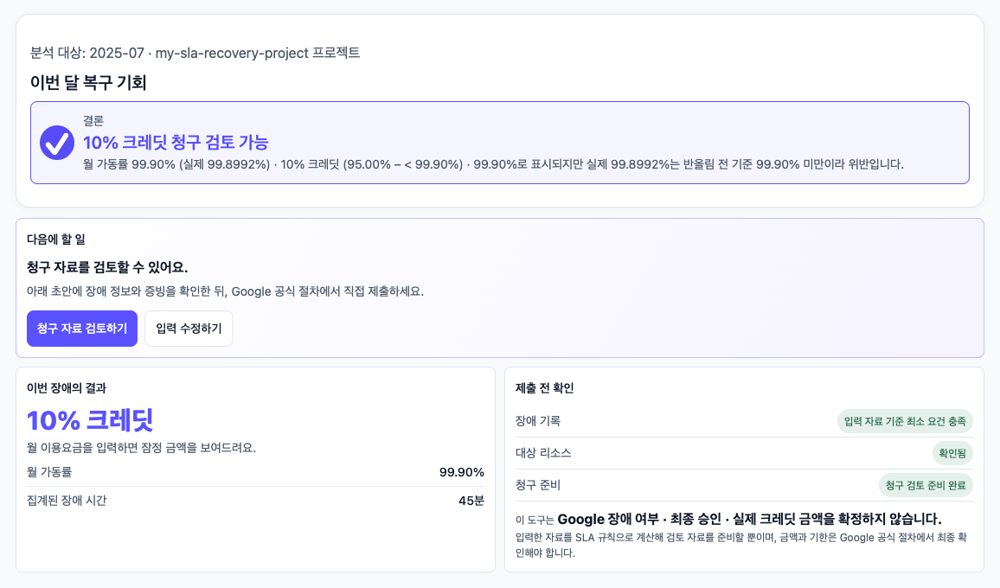
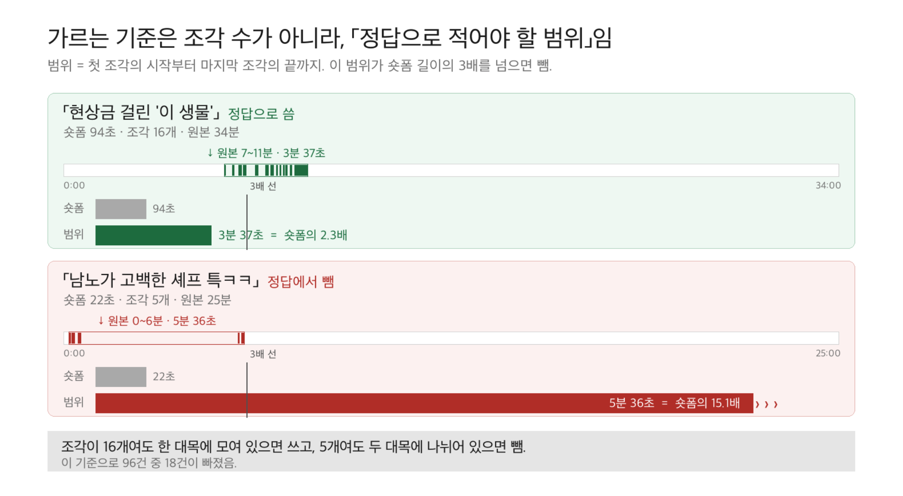
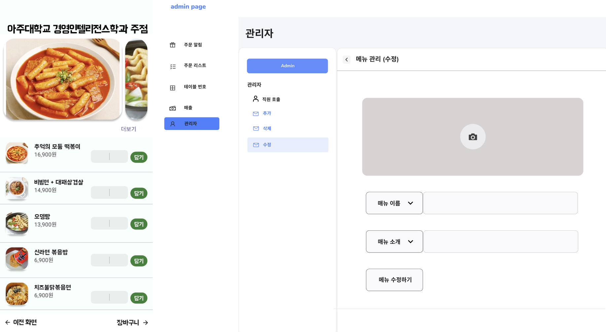
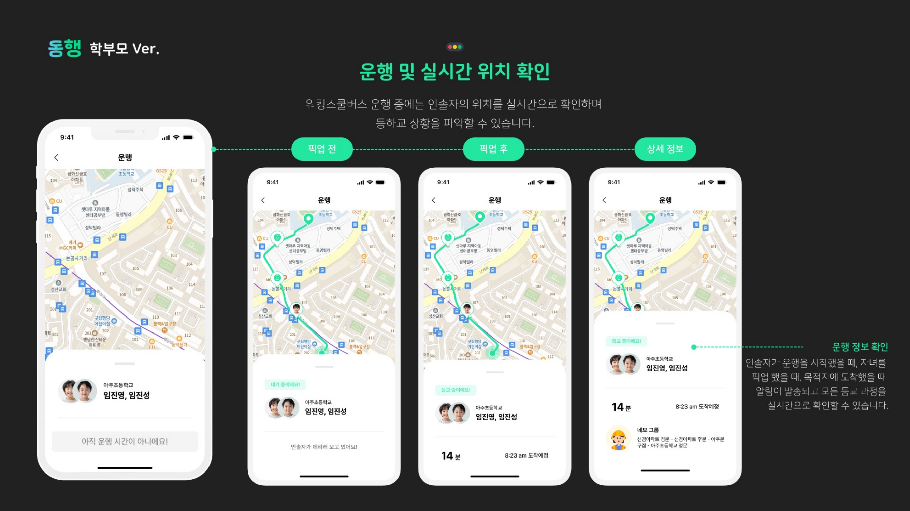
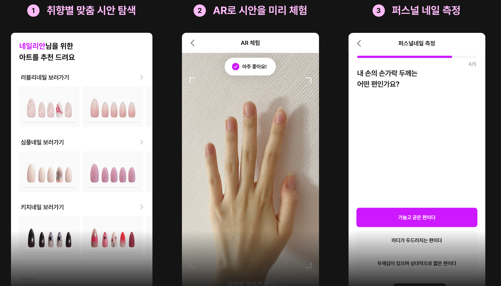
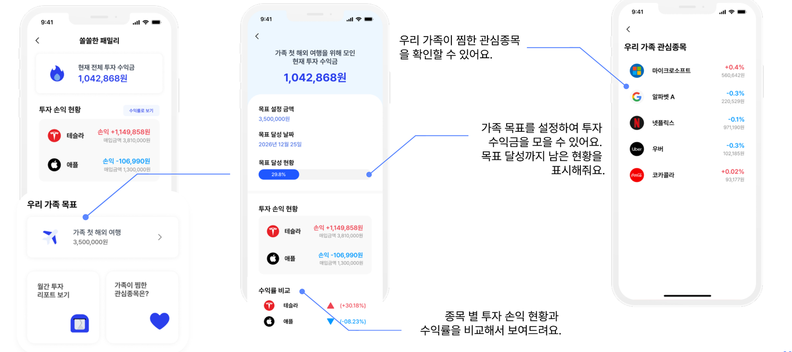
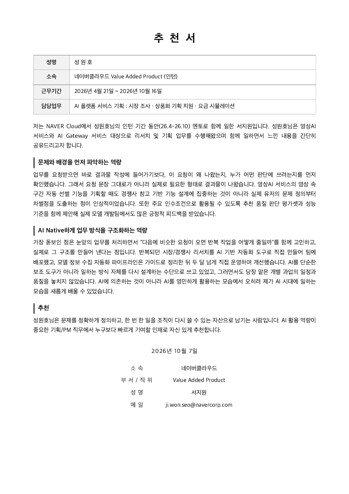

성원호 Product Manager(상품개발) 지원
가격 체계 수립 · JD 1 / 3
전부 자동으로 답하지 않는 것이, 이 상품의 정의였습니다.
Making AI Beneficial Challenge 2026 · 개인 참가 · 2026.08–09 · 기획·개발 단독 (대회 제출용 데모)
배상액을 빨리 계산해 주는 도구로 출발했는데, 실무자 열 명 남짓에게 물어보니 계산은 이미 할 줄 알았습니다. 막히는 곳은 이 장애가 벤더 책임인지 운영 문제인지 가릴 근거를 만드는 일이었습니다.
약관에 수식이 있는 항목은 규칙으로 고정하고, 판단이 갈리는 항목은 답을 내지 않고 확인 대상으로 남겼습니다. 청구 기한은 일수가 적혀 있었지만 기산 시점이 약관 본문과 제출 폼에서 달라 한쪽으로 확정하지 않았습니다.
전부 자동으로 처리하면 그럴듯해 보이지만, 틀린 금액을 자신 있게 내놓는 순간 쓸 이유가 없어집니다. 검증 시나리오 11건을 수기 계산과 전수 대조해 일치를 확인했습니다.
장애 발생 여부, 최종 승인, 실제 지급액은 도구가 확정하지 않는다고 화면에 적었습니다. 쓰는 사람이 어디까지 믿어도 되는지 알아야 가져다 쓸 수 있습니다.
실제 화면 — 표시값 99.90%를 그대로 쓰지 않고, 판정값 99.8992%와 함께 보여준다

약관 항목별 — 자동 확정 / 사람 확인
규칙으로 고정
월 가동률 산정 · 크레딧 등급 판정
사람이 확인
증거 인정 범위 · 청구 기한 기산일 · 최종 승인
자동 판정 범위를 넓히는 쪽이 더 그럴듯해 보였지만, 확정할 수 없는 항목까지 답을 내면 청구 가능 여부를 잘못 안내하게 됩니다.
성원호 Product Manager(상품개발) 지원
상품성 및 사업성 분석 · JD 2 / 3
목록뿐이던 가망 고객을, 가정을 밝힌 연간 반복매출 추정으로 바꿨습니다.
가비아 클라우드사업팀 · 인턴 · 2026.01 – 2026.03
가망 고객 목록은 있었지만 얼마의 매출로 볼지 기준이 없었습니다. 심사에 낼 숫자가 없는 것이 아니라, 숫자를 만들 방법이 우리에게 없다는 것이 문제였습니다.
가망 고객을 산업군 × 활용 목적 두 축으로 분류하고, 유형별 예상 사용량으로 월 매출을 추정해 연간 반복매출로 환산하는 식을 세웠습니다. 추정치 옆에 어떤 가정을 썼는지 함께 적었습니다. 빗나갔을 때 어느 가정이 틀렸는지 찾아야 해서입니다.
산업별 활용 사례와 도입 순서를 영문 증적으로 정리해 제출했고 공식 파트너 승인으로 이어졌습니다. 같은 기간 공공조달 등록 과제도 맡아 인계했고, 이후 조달청 최종 선정으로 이어졌습니다. 계약서의 SLA 조항도 전수 검토해 반복되는 리스크를 유형화했습니다.
추정에 쓴 기준과 아직 못 푼 항목을 판단 근거와 함께 문서로 남겨 인계했습니다. 제가 없어도 다음 사람이 같은 자리에서 이어받을 수 있어야 한다고 봤습니다.
받은 목록 vs 제출한 추정표 — 같은 43곳
고객사명
업종
예상 매출 —
근거 —
산업군 × 활용 목적 분류
유형별 예상 사용량①
월 매출 → 연간 반복매출②③
적용 가정 3건 병기
각 단계에 적용한 가정을 번호로 달아 함께 제출했습니다 — ① 사용량은 유형 대표값 ② 이탈·업셀 미반영 ③ 환율 고정. 빗나갔을 때 어느 가정이 틀렸는지 되짚을 수 있게 남기는 것이 목적이었습니다.
기등록 사업자 역추적 — 빈 칸이 곧 새로 만들 문서
| 기등록 사업자 | 제출 요건 ① | ② | ③ | ④ | ⑤ | ⑥ |
|---|---|---|---|---|---|---|
| A사 | ● | ● | ◍ | ● | ● | |
| B사 | ● | ◍ | ● | ● | ● | |
| C·D·E사 | ● | ● | ◍ | ● | ● |
● 선례 있음 ◍ 형식이 서로 다름 선례 없음 → 신규 작성
사내 선례가 없어 먼저 등록한 5개사를 역추적해 요건을 항목 단위로 대조했습니다. 빈 칸은 베껴 올 곳이 없다는 뜻이라 기준부터 세워 새로 썼고, 그 기준을 서류 매핑 테이블로 정리해 인계했습니다.
성원호 Product Manager(상품개발) 지원
신규 상품 기획 · 경쟁사 분석 · JD 3 / 3
점수를 올리는 대신, 그 점수가 틀렸다는 것을 먼저 증명했습니다.
네이버클라우드 · AI 제품 기획 · 2026.04 – 2026.08
성능 비교를 한 번 내는 것만으로는 다음 비교와 이어 붙일 수 없다고 봤습니다. 누가 하더라도 같은 결과가 나오는 기준부터 필요했습니다.
기존 채점이 맞게 고른 것만 세고 빗나간 것은 세지 않아 후보를 많이 낼수록 점수가 오르는 구조였습니다. 바꾸자고 주장하기보다 두 응답의 점수가 같게 나온다는 사실을 먼저 보여준 뒤 지표를 다시 정의했습니다.
바꾼 기준으로 다시 돌리자 기존 점수에서는 보이지 않던 과다 추출이 드러났습니다. 전체 평균만으로는 특정 영역만 잘해도 통과하기에 영역별 하한도 뒀습니다. 평가셋·채점 기준·선정 절차를 문서로 남겨 누가 하더라도 같은 비교가 나오는 형태로 정리했습니다.
같은 기간 주요 클라우드 3사의 가드레일을 직접 호출해 검사가 걸리는 지점과 과금 단위를 공식 문서 기준으로 대조했습니다. 성능 점수만으로는 어느 쪽이 싼지, 어디서 막히는지가 안 보였습니다.
정답셋에 넣을지 가르는 기준 — 조각 수가 아니라 「정답으로 적어야 할 범위」

조각이 많아도 한 대목에 모여 있으면 쓰고, 적어도 두 대목에 흩어져 있으면 뺐습니다. 세는 방식이 아니라 쓰는 사람이 실제로 걸러내야 할 범위를 기준으로 삼았습니다.
성원호 Product Manager(상품개발) 지원
Appendix · 4 / 5
앞 세 장은 채용공고 담당업무에 직접 닿는 사례만 골랐습니다. 아래는 그 밖의 경험입니다.
재직 중 수행 업무
수상 · 공모전
만들어 운영해 본 것




성원호 Product Manager(상품개발) 지원
Reference · 5 / 5
네이버클라우드 Value Added Product · 서지원 · 2026.10.07

멘토가 짚은 두 가지는 앞 네 장에서 제가 쓴 방식과 같습니다.
01 · 문제와 배경을 먼저 파악하는 역량
"요청 문장 그대로가 아니라 실제로 필요한 형태로 결과물이 나왔습니다. 경쟁사 참고 기반 기능 설계에 집중하는 것이 아니라 실제 유저의 문제 정의부터 차별점을 도출하는 점이 인상적이었습니다. 또한 주요 인수조건으로 활용될 수 있도록 품질 판단 평가셋과 성능 기준을 함께 제안해 실제 모델 개발팀에서도 많은 긍정적 피드백을 받았습니다."
02 · AI Native하게 업무 방식을 구조화하는 역량
"눈앞의 업무를 처리하면서 다음에 비슷한 요청이 오면 반복 작업을 어떻게 줄일까를 함께 고민하고, 실제로 그 구조를 만들어 낸다는 점입니다. 모델 정보 수집 자동화 파이프라인은 가이드로 정리한 뒤 두 달 넘게 직접 운영하며 개선했습니다. 그러면서도 당장 맡은 개별 과업의 일정과 품질을 놓치지 않았습니다."
추천서가 가리키는 것 · 이 문서의 어디
| 문제 정의부터 차별점을 도출 | 3P | 경쟁 제품 평가 기준 재설계 |
| 품질 판단 평가셋 · 성능 기준 제안 | 1P | 자동 판정 범위와 사람 확인 경계 |
| 반복 작업을 줄이는 구조를 만들어 냄 | 4P | 팀 AI 업무 체계 구축 |
| 가이드로 정리한 뒤 두 달 넘게 운영 | 4P | 모델 단가·단종 감시 자동화 |
재직 중 수행한 업무는 공개 가능한 범위로만 기재했으며,
고객사명·내부 수치·미공개 제품 정보는 포함하지 않았습니다.